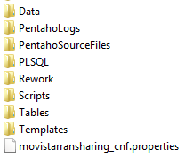

LTE HUAWEI - MOVISTAR RAN SHARING¶
1. OBJETIVO¶
El presente documento busca explicar y detallar el proceso que genera LTE HUAWEI Movistar Ran Sharing
2. ALCANCE¶
Áreas involucradas: Performance de Red
3. DEFINICIONES¶
Cortado: Servidor LINUX en donde se importan los CSV desde el proveedor. El nombre es cortado.claro.amx y la dirección IP física es 10.105.146.8
4. DESCRIPCION GENERAL¶
Claro Argentina tiene un acuerdo de RAN SHARING (uso compartido de la red de acceso) con Movistar. Este proyecto está orientado a las portadoras de Claro en sitios LTE de Movistar que son del vendor HUAWEI Se nos provee un archivo separado por comas (CSV) con un set de KPIs ya calculados a nivel celda y hora por hora. La integración a SMART consiste en levantar esos CSV y llevarlo a tablas de una base de datos para así calcular las distintas sumarizaciones y mostrarlas gráficamente en nuestra herramienta web. La información puede visualizarse en Smart hora x hora (hour), por hora pico del día (bh-busy hour), por hora pico de la semana (isabh week) y según las agrupaciones de celda y consolidado.
5. MACRO FLUJO DEL PROCESO¶

6. DESCRIPCIÓN DETALLADA¶
6.1. Datos Origen¶
- Server Origen: 170.51.242.109
- Path:/sftp_ran_sharing/Movistar/KPIs/kpis_ran_sharing_[YYYY_MM_DD].csv
- Cantidad de archivos origen: 1 por día
- Frecuencia actualización: diaria
- Tipo de Archivo: csv
6.2. Datos Destino¶
- Server Destino:
- Conversión de Archivos: No
- Tabla Files: Si
- Tabla Auxiliar: No
- Frecuencia de corrida del proceso: Diaria
- Regionales: No
- RAW Si/No: No
- Hour Si/No: Si
- Day Si/No: No
- BH Si/No: Si
- ISABHWEEK Si/No: Si
- Países: No
- Destino (File System): /calidad/MovistarRanSharing
6.3. Shell Copiar Archivos Origen a Destino y limpieza de los mismos¶
Scripts tienen las siguientes funciones: 1- Copiar los archivos 2- Limpieza 3- Ejecutar Pentaho
Los scripts son los siguientes:
6.4. Listado de Tablas Utilizadas¶
Las tablas utilizadas son las siguientes:
- LTE_HUAW_BH
- LTE_HUAW_HOUR
- LTE_HUAW_IBHW
- OBJECTS_SP_LTE_HUAW
- FILES
- ERROR_LOG_NEW
- Tabla FILES:
- Tabla ERROR_LOG_NEW:

- Tabla LTE_HUAW_BH
- Tabla LTE_HUAW_HOUR
- Tabla LTE_HUAW_IBHW
6.5. Pentaho¶
Estructura del proyecto:
- Proceso Pentaho End To End

- Proceso Extraer csv
El objetivo de este proceso es conectarse al servidor sftp para poder extraer el archivo csv correspondiente para luego procesarlo en el paso siguiente (csvMovistar) que limpia las líneas duplicadas del archivo.
- Proceso Popular LTE_HUAW_HOUR Table

Este proceso se encarga de obtener el nombre del archivo de formato csv y llenar la tabla hour para luego, en el paso siguiente (Calc. Sum BH IBHW), poder calcular las tablas BH e IBHW.
7. CONTROLES¶
No aplica esta sub-seccion.
8. REPROCESO MANUAL¶

Ubicación de los scripts en la carpeta: /calidad/MovistarRanSharing/Scripts Para realizar el reproceso se debe ingresar los siguientes parámetros:
FECHA: Formato (YYYY_MM_DD)
Por consola se utiliza de la siguiente manera:
Ejecutando el siguiente script:
MovistarRanSharing_EndToEndRework.sh
8. SMART¶
Los reportes en la herramienta Smart se muestran de la siguiente manera: